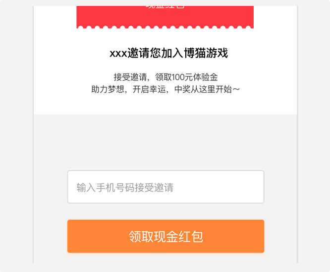

1.面对面邀请朋友扫描专属二维码，或者分享邀请链接给您的朋友，当他们下载的应用程序使用手机号完成注册并登录后，将记录一位好友，邀请成功，邀请人可获得邀请好友的相应消费返点。
2.在博猫的应用程序客户端，点击底部【我】

3.进入【邀请好友】界面，设置奖金组，并生成你的专属推荐二维码和链接。
4.邀请朋友扫描二维码，或者分享邀请链接给您的朋友。
5.下注博猫游戏APP并注册。
活动说明
1.仅限未使用过博猫游戏的新用户，同一个设备号，手机号，微信号，QQ号的用户视为同一用户;
2.所邀请的好友必须经常活跃，是非正常手段拉取的好友，系统将智能检索到之后自动扣除奖励，博猫游戏将保留最终解释权。